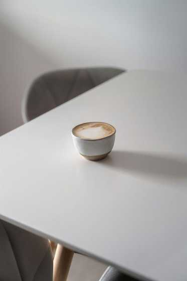
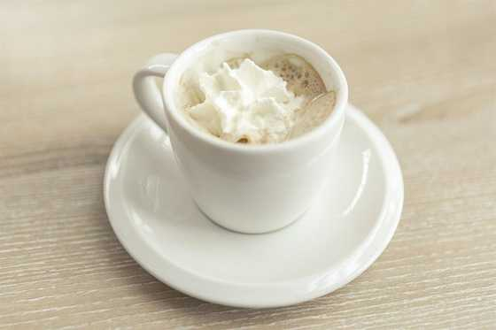
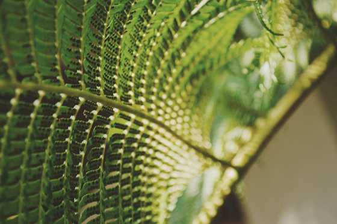
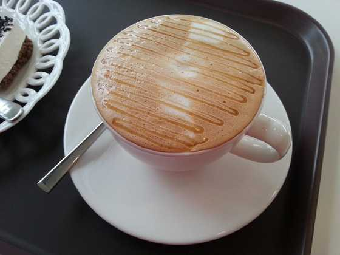
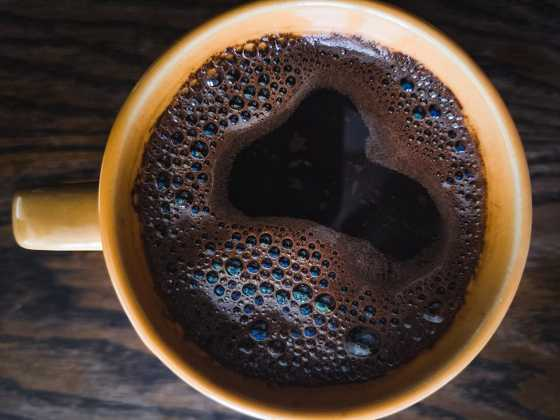

奥州市水沢南町・岡村ビル2階
くるくる、
からだにやさしいひるやすみ。
駅から歩いて数分のビルの2階で、昼にひらく小さなカフェ。スムージーやアサイーボウルを、ゆっくりどうぞ。
お店のこと
昼はからだにやさしく、夜は別の顔になる部屋。
岩手日報(2024年7月)の紹介記事によると、くるくるカフェは、水沢南町の岡村ビル2階にある、昼と夜で顔が変わるカフェの「昼の部」です。昼は食材にこだわる「くるくるカフェ」、夜はくつろぎの場として「13番目の月」を営業しています。もとスナックだった空き店舗を改装し、2024年6月に開店したと報じられました。
運営はおうちカフェミゥミゥ(及川由美代表)の系列で、座席は10席ほど、窓が多く開放感のある空間とされています。若者に人気のものや珍しさに着目したメニューを取り入れ、地域の活性化をめざす、という趣旨でした。昼のメニューは、からだにやさしいスムージーやアサイーボウルで知られています。
情報源: 岩手日報(2024年7月9日)・食べログ・おうちカフェMIUMIUのブログ・Instagram
店名「くるくる」の意味は確認できていません。このページの見出しや言い回しは制作側の表現です。
写真はフリー素材のイメージで、お店の実際の様子・商品ではありません。国外や撮影地不明のものを含みます。




メニュー
スムージーとアサイーボウルが中心。
紹介記事などで確認できたのは、スムージーとアサイーボウルが知られていること、食べログに「健康・美容メニューあり」とあることです。品名・価格などの詳しい内容は確認できていないため、掲載していません。
| メニュー詳細 | 準備中 |
|---|---|
| 価格 | 準備中 |
| 営業時間・定休日 | 準備中(報道では昼の営業。最新情報はInstagramでご確認ください) |
| 電話 | 準備中 |





口コミ
こんな声が聞こえてきそう(イメージ例)
イメージ例駅から近くて、ビルの2階にあるのがちょっと秘密基地みたいでした。窓が大きくて明るい。
イメージ例ひるやすみに寄って、冷たいスムージーでひと息。午後もがんばれそうです。
イメージ例ボウルがきれいで、食べる前に写真を撮ってしまいました。おなかにも気持ちにもやさしい味でした。
上の3件は制作側が作った創作で、実在のお客様の声ではありません。
アクセス
水沢駅から歩いて数分、岡村ビルの2階。
| 所在地 | 〒023-0851 岩手県奥州市水沢南町１−１２ 岡村ビル 2F |
|---|---|
| 駐車場 | 準備中(Instagramのストーリーで案内があるとのことです) |
| @kuru_cafe_ |
写真クレジット
写真について
サイズ縮小・JPEG再保存の加工を行っています。
- modern.jpg「Coffee Cup on Modern Table」 Genaro35 / CC0 1.0(撮影地不明) / 出典
- blueberry.jpg「Blueberriessss」 Suzy Hazelwood / CC0(撮影地不明) / 出典
- oatmeal.jpg「Oatmeal with a cherry compote」 Chandapiwa Malema / CC0(ボツワナ付近(位置情報)) / 出典
- orange.jpg「Orange fruit (Citrus x sinensis)」 Kuttykrishnan Photos / CC0(撮影地不明) / 出典
- cream.jpg「Espresso with whipped cream (Unsplash)」 Daniel Robert / CC0 1.0(撮影地不明) / 出典
- fern.jpg「Fern Leaves (Unsplash)」 Becky Phan / CC0 1.0(撮影地不明) / 出典
- whisk.jpg「Whisk (IMG 0265)」 Matti Blume / CC BY-SA 4.0(撮影地不明) / 出典
- loaf.jpg「No-Knead Bread - Finished Loaf (294068096)」 daisybush / CC BY 2.0(撮影地不明) / 出典
- tea.jpg「Corn tea cup」 KQuhen / CC BY-SA 4.0(撮影地不明) / 出典
- caramel.jpg「Coffee and saucer」 Douglas Paul Perkins / CC BY 3.0(韓国(扶余)) / 出典
- yellow.jpg「Top view of a yellow cup of black coffee (51162366368)」 Ivan Radic / CC BY 2.0(撮影地不明) / 出典
- flat.jpg「Flat white coffee at Highgate Cricket Club, Haringey」 Acabashi / CC BY-SA 4.0(イギリス(ロンドン)) / 出典